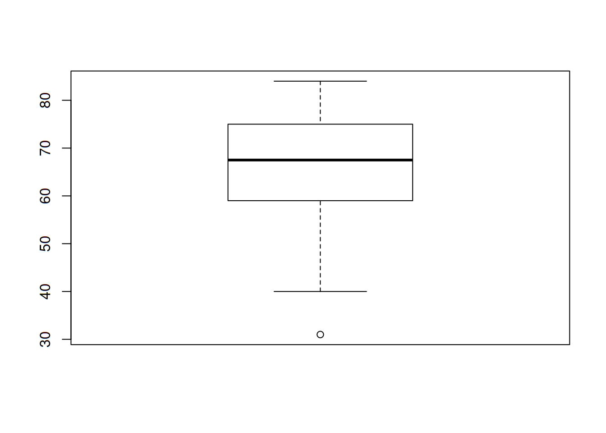

Estadística Descriptiva
Los métodos estadísticos son muy importantes, ya que ellos nos permiten conocer los fenómenos que nos rodean, en aspectos que quizá no nos imaginamos. Por doquier estamos expuestos a los datos, y eso se extiende a científicos e ingenieros en sus actividades profesionales.
Es muy importante definir los objetos que se constituyen en una población de interés. Dicha población puede ser el conjunto de todos los productos elaborados en una fábrica un día determinado, o todos los estudiantes egresados de cierta carrera en la generación 2017, por ejemplo. Cuando tenemos acceso a todos los datos deseados de todos los miembros de una población, tenemos un censo.
Sin embargo, es muy complicado poder realizar censos, ya sea por escasez de tiempo o de dinero. Por ello, se prefiere seleccionar un grupo pequeño de elementos de la población de manera aleatoria, para tener lo que se conoce como una muestra.
Cabe mencionar que en ocasiones, no nos interesan todas las características de los objetos de una población. Por ejemplo, puede que hayamos reunido a 50 personas para analizar su estado de salud. Probablemente debamos preguntarles su edad, su peso, su estatura y tomarles medidas de su temperatura o presión arterial; sin embargo, no tiene sentido preguntarles qué equipo de futbol es su favorito o a qué hora pasan su noticiero predilecto. Lo que necesitamos son sus características.
A las características podemos dividirlas en dos: categóricas y numéricas. Las primeras son etiquetas, como los nombres o la marca de un coche. Las segundas pueden expresarse con números. Definamos una variable como cualquier característica cuyo valor puede cambiar de un sujeto a otro.
Ramas de la Estadística
Dividiremos la Estadística en dos ramas por el momento. En primera instancia, es necesario recopilar, organizar, resumir y presentar los datos; de esto se encarga la Estadística Descriptiva. Por otro lado, se desea extender las propiedades de la muestra hacia la población, mediante inferencias que permitan comprender mejor su comportamiento e incluso pronosticarlo; esa es la función de la Estadística Inferencial.
Estadística Descriptiva en acción
La tragedia que sufrió el transbordador espacial Challenger y sus astronautas en 1986 condujo a varios estudios para investigar las razones de la falla de la misión. La atención se enfocó de inmediato en el comportamiento de los sellos anulares del motor del cohete. He aquí datos derivados de observaciones en x = temperatura del sello anular (°F) en cada encendido de prueba o lanzamiento del motor del cohete del transbordador (Presidential Commission on the Space Shuttle Challenger Accident, Vol. 1, 1986: 129-131). Los datos se presentan en una sola columna para dejar en claro que se refieren a datos univariables. Cabe mencionar que los datos se encuentran en la carpeta datasets del repositorio de la asignatura en GitHub.
| x |
|---|
| 84 |
| 49 |
| 61 |
| 40 |
| 83 |
| 67 |
| 45 |
| 66 |
| 70 |
| 69 |
| 80 |
| 58 |
| 68 |
| 60 |
| 67 |
| 72 |
| 73 |
| 70 |
| 57 |
| 63 |
| 70 |
| 78 |
| 52 |
| 67 |
| 53 |
| 67 |
| 75 |
| 61 |
| 70 |
| 81 |
| 76 |
| 79 |
| 75 |
| 76 |
| 58 |
| 31 |
A simple vista, los datos así mostrados no dicen gran cosa. Para ello es deseable organizarlos de manera que muestren algún comportamiento en particular. Una de las maneras más burdas es el diagrama de tallo y hojas, el cual se muestra a continuación:
##
## The decimal point is 1 digit(s) to the right of the |
##
## 3 | 1
## 4 | 059
## 5 | 23788
## 6 | 01136777789
## 7 | 000023556689
## 8 | 0134La explicación del diagrama es sencilla: las cifras que representan las decenas se colocan como tallos, mientras que las cifras que son unidades se vuelven hojas. Este diagrama nos permite saber de manera rápida cuáles son las temperaturas más comunes o frecuentes en nuestro conjunto de datos. También puede decirse que es un histograma muy rudimentario.
A continuación se muestra un histograma:

Y para terminar, una gráfica que posteriormente se verá cómo interpretarse y construirse es la gráfica de caja, la cual se muestra a continuación:
boxplot(temp[1:36,])
Lo anterior, así como la tabla donde se muestran los datos, fue realizado con un software estadístico: R.
Representaciones gráficas y tabulares
Es importante mencionar que existe una notación que debemos considerar: el número de observaciones presentes en un conjunto de datos dado, se denotará por la letra n. También, cada observación se denotará por la letra x acompañada de un subíndice que no tiene ninguna función más que identificar los datos. Es decir, representar una observación como \(x_1\) no implica que esta sea la más pequeña. Con esto en mente, pasamos a revisar las representaciones gráficas de los datos.
Diagrama de tallo y hojas
Anteriormente se habló un poco de este diagrama. Es bastante sencillo y puede aplicarse a números decimales. Veamos los pasos para producirlos:
- Se selecciona uno o más de los primeros dígitos para el tallo. Los dígitos restantes serán las hojas.
- Los valores del tallo se escriben de manera vertical.
- Se anota una hoja por cada observación a la derecha del tallo.
- Se indican las unidades para tallos y hojas en algún lugar de la gráfica.
Una gráfica de tallos y hojas da información sobre los siguientes aspectos de los datos: - Identificación de un valor típico o representativo. - Grado de dispersión en torno al valor típico. - Presencia de brechas en los datos. - Grado de simetría en la distribución de los valores. - Número y localización de crestas. - Presencia de valores afuera de la gráfica.
A modo de práctica, tomemos los siguientes valores que representan el flujo de agua en regaderas de Australia en litros por minuto, para n = 130. Se muestra también el código en R para mostrar y calcular el diagrama:
flujo <- read.table("datasets/002-flujo.txt", header = FALSE)
head(flujo)## V1
## 1 4.6
## 2 12.3
## 3 7.1
## 4 7.0
## 5 4.0
## 6 9.2Construyamos nuestro diagrama:
stem(flujo[1:130,])##
## The decimal point is at the |
##
## 2 | 23
## 3 | 2344567789
## 4 | 01356889
## 5 | 00001114455666789
## 6 | 0000122223344456667789999
## 7 | 00012233455555668
## 8 | 022333448
## 9 | 012233335666788
## 10 | 2344455688
## 11 | 2335999
## 12 | 37
## 13 | 8
## 14 | 36
## 15 | 0035
## 16 |
## 17 |
## 18 | 9- ¿Cuál es una velocidad de flujo o gasto típico o representativo?
- ¿Parece estar la gráfica altamente concentrada o dispersa?
- ¿Es la distribución de valores razonablemente simétrica? Si no, ¿cómo describiría el alejamiento de la simetría?
- ¿Describiría cualquier observación como alejada del resto de los datos (un valor extremo)?
Diagrama de puntos
Es un resumen atractivo de datos numéricos cuando el conjunto es razonablemente pequeño o existen pocos valores de datos distintos. Cada observación está representada por un punto sobre la ubicación correspondiente en una escala de medición horizontal. Cuando un valor ocurre más de una vez, existe un punto por cada ocurrencia y estos puntos se apilan verticalmente. Como con la gráfica de tallos y hojas, una gráfica de puntos da información sobre la localización, dispersión, extremos y brechas. Usemos como ejemplo el conjunto de las temperaturas del Challenger.
stripchart(temp[1:36,], method = 'stack')Tablas de frecuencia
Vamos a trabajar ahora con datos categóricos. Cuando hablamos de categorías, hablamos de variables nominales, es decir, nombres o etiquetas. Por lo tanto, el tratamiento que debemos darles difiere de los números. Por principio de cuentas, debemos tabularlos. Esto se consigue con una tabla de frecuencias. Primero leemos el archivo con los datos:
marca <- c(read.table("datasets/003-marca.txt"))
marca## $V1
## [1] Apple Apple Samsung HTC Apple Xiaomi Nokia
## [8] Samsung Motorola Samsung Samsung Apple Apple Huawei
## [15] Motorola Samsung Samsung Apple Motorola Nokia Huawei
## [22] Huawei Motorola Samsung Samsung Apple Samsung LG
## [29] Apple Samsung Motorola Huawei
## Levels: Apple HTC Huawei LG Motorola Nokia Samsung XiaomiEnseguida creamos la tabla:
mar <- table(marca)
mar## marca
## Apple HTC Huawei LG Motorola Nokia Samsung Xiaomi
## 8 1 4 1 5 2 10 1pie(mar)Distribuciones de frecuencia
En ocasiones es necesario trabajar con valores que no se repiten tanto, como en el caso que se presenta enseguida.
Las compañías eléctricas requieren información sobre el consumo de los clientes para obtener pronósticos precisos de demandas. Investigadores de Wisconsin Power and Light determinaron el consumo de energía (BTU) durante un periodo particular con una muestra de 90 hogares calentados con gas. Se calculó un valor de consumo promedio como sigue:
consumo <- scan("datasets/004-horno.txt")
consumo## [1] 2.97 4.00 5.20 5.56 5.94 5.98 6.35 6.62 6.72 6.78 6.80
## [12] 6.85 6.94 7.15 7.16 7.23 7.29 7.62 7.62 7.69 7.73 7.87
## [23] 7.93 8.00 8.26 8.29 8.37 8.47 8.54 8.58 8.61 8.67 8.69
## [34] 8.81 9.07 9.27 9.37 9.43 9.52 9.58 9.60 9.76 9.82 9.83
## [45] 9.83 9.84 9.96 10.04 10.21 10.28 10.28 10.30 10.35 10.36 10.40
## [56] 10.49 10.50 10.64 10.95 11.09 11.12 11.21 11.29 11.43 11.62 11.70
## [67] 11.70 12.16 12.19 12.28 12.31 12.62 12.69 12.71 12.91 12.92 13.11
## [78] 13.38 13.42 13.43 13.47 13.60 13.96 14.24 14.35 15.12 15.24 16.06
## [89] 16.90 18.26Podríamos graficar el histograma directamente, pero queremos obtener la distribución de frecuencias también. Para ello, ejecutamos la función hist pero con la opción de no mostrarlo.
df <- hist(consumo, breaks = 'Sturges', plot = FALSE)
df## $breaks
## [1] 2 4 6 8 10 12 14 16 18 20
##
## $counts
## [1] 2 4 18 23 20 16 4 2 1
##
## $density
## [1] 0.011111111 0.022222222 0.100000000 0.127777778 0.111111111 0.088888889
## [7] 0.022222222 0.011111111 0.005555556
##
## $mids
## [1] 3 5 7 9 11 13 15 17 19
##
## $xname
## [1] "consumo"
##
## $equidist
## [1] TRUE
##
## attr(,"class")
## [1] "histogram"intervalos <- df$breaks
clases <- cut(consumo, breaks = intervalos, dig.lab = 2, right = FALSE)
tabla.frec <- table(clases)
tabla <- as.data.frame(tabla.frec)
tabla## clases Freq
## 1 [2,4) 1
## 2 [4,6) 5
## 3 [6,8) 17
## 4 [8,10) 24
## 5 [10,12) 20
## 6 [12,14) 16
## 7 [14,16) 4
## 8 [16,18) 2
## 9 [18,20) 1El histograma quedaría así:
hist(consumo)